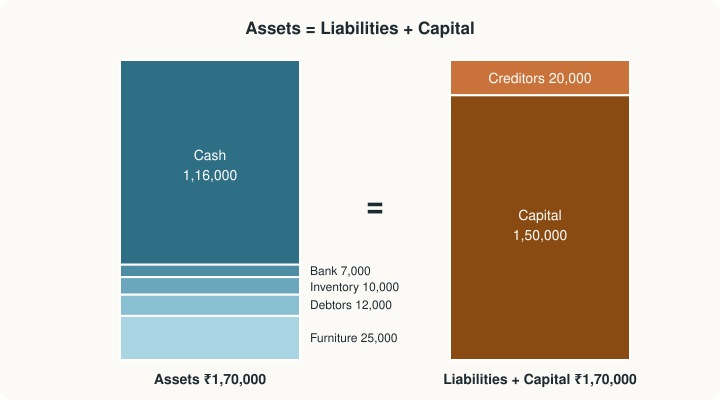

Chapter 2: The Accounting Equation¶
Every transaction keeps the two sides in balance
Learning outcomes
After studying this chapter you should be able to:
- State the accounting equation and rearrange it to find any one of its terms.
- Explain why every transaction leaves the equation in balance.
- Show the effect of a series of transactions on assets, liabilities and capital in a table.
- Explain how revenue, expenses and drawings change capital, using the expanded equation.
- Prepare a simple balance sheet from the final balances.
- Find the profit of a period from the opening and closing capital.
2.1 Resources and claims¶
Look at any business at a moment in time and you can ask two questions about it. What does it have? Cash, goods, furniture, money owed to it by customers: these are its resources, its assets. Where did those resources come from? Some came from the owner, who put money in; the rest came from outsiders, who lent money or supplied goods on credit. Every rupee of resources has a source, and every source has a claim on the resources.
The claims of outsiders are liabilities. The claim of the owner is capital (also called owner's equity or net worth). Because every resource came from somewhere, the total of the resources must equal the total of the claims on them:
This is the accounting equation. It is not a fact that has to be checked; it is true by construction, because capital is defined as whatever is left of the assets after the liabilities have been met. It is the direct consequence of the dual aspect concept of Chapter 1: every transaction has two sides, and recording both keeps the equation true.
Three forms of the equation¶
The equation can be rearranged to find any one of its terms when the other two are known.
The first rearrangement is especially useful: the owner's capital is what would be left for the owner if all the assets were turned into cash at their book values and all the liabilities were paid.
Example 2.1 Finding the missing term
| Case | Assets (₹) | Liabilities (₹) | Capital (₹) | Working |
|---|---|---|---|---|
| (a) | 5,00,000 | 1,20,000 | 3,80,000 | 5,00,000 − 1,20,000 |
| (b) | 4,65,000 | 85,000 | 3,80,000 | 85,000 + 3,80,000 |
| (c) | 2,40,000 | 90,000 | 1,50,000 | 2,40,000 − 1,50,000 |
2.2 How transactions affect the equation¶
Every transaction changes at least two items, and it always changes them in a way that keeps the two sides equal. There are only a few patterns:
| Pattern | Effect on the equation | Example |
|---|---|---|
| One asset up, another asset down | Total assets unchanged | Buying furniture for cash |
| Asset up, liability up | Both sides rise by the same amount | Buying goods on credit; taking a loan |
| Asset down, liability down | Both sides fall by the same amount | Paying a creditor |
| Asset up, capital up | Both sides rise | Owner brings in cash; earning revenue |
| Asset down, capital down | Both sides fall | Paying an expense; owner withdraws cash |
| One liability up, another down | Right side unchanged | A creditor's debt is converted into a loan |
| Liability up, capital down | Right side unchanged | An expense is incurred but not yet paid |
Table 2.1. The patterns by which a transaction can change the accounting equation.
Key idea
No transaction can change only one side of the equation by itself. Either both sides change by the same amount, or one side has an increase and a decrease of the same amount. That is why the equation always balances.
2.3 Revenue, expenses and drawings¶
Capital does not stay fixed after the owner's first investment. It changes for four reasons:
- it increases when the owner brings in more money or goods (additional capital);
- it increases when the business earns revenue;
- it decreases when the business incurs expenses;
- it decreases when the owner withdraws money or goods (drawings).
Revenue and expenses together make the profit or loss. So the capital at the end of a period is:
(with a loss subtracted instead of a profit added). Writing capital in full gives the expanded accounting equation:
Why do revenue and expenses belong to capital? Because the owner is entitled to whatever profit the business makes and bears whatever loss it suffers. When goods costing ₹30,000 are sold for ₹42,000 in cash, cash rises by ₹42,000, inventory falls by ₹30,000, and the net increase in assets of ₹12,000 belongs to the owner: capital rises by ₹12,000, the profit on the sale.
Caution
Drawings are not an expense. They reduce capital directly, but they are not costs of earning revenue, so they do not reduce profit. Paying the shop's rent is an expense; paying the owner's house rent from the shop's cash is drawings. Both reduce capital, but only the first reduces profit.
2.4 A worked example: Asha Stationers¶
The best way to see the equation at work is to follow a business through its first transactions. Asha opens a stationery shop, Asha Stationers, in April 2025.
Example 2.2 The transactions of Asha Stationers
- Asha starts the business with cash ₹1,50,000.
- She deposits ₹80,000 of the cash in a bank account in the name of the business.
- She buys furniture for ₹25,000, paying by cheque.
- She buys goods (stationery) for ₹60,000 on credit from Ravi Traders.
- She sells goods that cost ₹30,000 for ₹42,000 in cash.
- She sells goods that cost ₹20,000 to Kiran on credit for ₹27,000.
- She pays Ravi Traders ₹40,000 by cheque.
- Kiran pays ₹15,000 in cash.
- She pays the shop's rent of ₹6,000 in cash.
- She withdraws ₹5,000 in cash for personal use.
- She pays a salary of ₹8,000 to an assistant by cheque.
Analysis of each transaction.
| No. | Items affected | Reasoning |
|---|---|---|
| 1 | Cash +1,50,000; Capital +1,50,000 | The business receives cash and owes it to Asha as capital |
| 2 | Cash −80,000; Bank +80,000 | One asset exchanged for another |
| 3 | Bank −25,000; Furniture +25,000 | One asset exchanged for another |
| 4 | Inventory +60,000; Creditors +60,000 | An asset is acquired and a liability is created |
| 5 | Cash +42,000; Inventory −30,000; Capital +12,000 | Assets rise by 12,000 net; the profit belongs to the owner |
| 6 | Debtors +27,000; Inventory −20,000; Capital +7,000 | Kiran now owes 27,000; profit 7,000 |
| 7 | Bank −40,000; Creditors −40,000 | An asset is used to pay a liability |
| 8 | Cash +15,000; Debtors −15,000 | One asset exchanged for another |
| 9 | Cash −6,000; Capital −6,000 | An expense reduces capital |
| 10 | Cash −5,000; Capital −5,000 | Drawings reduce capital |
| 11 | Bank −8,000; Capital −8,000 | An expense reduces capital |
The equation after each transaction (amounts in ₹; the balance line shows the position after the transaction above it).
| No. | Cash | Bank | Inventory | Debtors | Furniture | = | Creditors | Capital |
|---|---|---|---|---|---|---|---|---|
| 1 | +1,50,000 | +1,50,000 | ||||||
| Balance | 1,50,000 | 0 | 0 | 0 | 0 | = | 0 | 1,50,000 |
| 2 | −80,000 | +80,000 | ||||||
| Balance | 70,000 | 80,000 | 0 | 0 | 0 | = | 0 | 1,50,000 |
| 3 | −25,000 | +25,000 | ||||||
| Balance | 70,000 | 55,000 | 0 | 0 | 25,000 | = | 0 | 1,50,000 |
| 4 | +60,000 | +60,000 | ||||||
| Balance | 70,000 | 55,000 | 60,000 | 0 | 25,000 | = | 60,000 | 1,50,000 |
| 5 | +42,000 | −30,000 | +12,000 | |||||
| Balance | 1,12,000 | 55,000 | 30,000 | 0 | 25,000 | = | 60,000 | 1,62,000 |
| 6 | −20,000 | +27,000 | +7,000 | |||||
| Balance | 1,12,000 | 55,000 | 10,000 | 27,000 | 25,000 | = | 60,000 | 1,69,000 |
| 7 | −40,000 | −40,000 | ||||||
| Balance | 1,12,000 | 15,000 | 10,000 | 27,000 | 25,000 | = | 20,000 | 1,69,000 |
| 8 | +15,000 | −15,000 | ||||||
| Balance | 1,27,000 | 15,000 | 10,000 | 12,000 | 25,000 | = | 20,000 | 1,69,000 |
| 9 | −6,000 | −6,000 | ||||||
| Balance | 1,21,000 | 15,000 | 10,000 | 12,000 | 25,000 | = | 20,000 | 1,63,000 |
| 10 | −5,000 | −5,000 | ||||||
| Balance | 1,16,000 | 15,000 | 10,000 | 12,000 | 25,000 | = | 20,000 | 1,58,000 |
| 11 | −8,000 | −8,000 | ||||||
| Balance | 1,16,000 | 7,000 | 10,000 | 12,000 | 25,000 | = | 20,000 | 1,50,000 |
Check of the final position.
Assets: 1,16,000 + 7,000 + 10,000 + 12,000 + 25,000 = ₹1,70,000.
Liabilities + Capital: 20,000 + 1,50,000 = ₹1,70,000.
The equation balances after every single transaction, as it must.
Notice that Asha's capital ends where it began, at ₹1,50,000. That is not because nothing happened: the business made a profit, and Asha withdrew exactly that much. The profit can be read from the capital column:
| Item | ₹ |
|---|---|
| Profit on cash sale (transaction 5) | 12,000 |
| Profit on credit sale (transaction 6) | 7,000 |
| Gross profit on sales | 19,000 |
| Less: Rent (transaction 9) | 6,000 |
| Less: Salary (transaction 11) | 8,000 |
| Net profit | 5,000 |
Table 2.2. The profit of Asha Stationers, taken from the capital column.
Capital therefore moved as follows: opening capital 1,50,000 + profit 5,000 − drawings 5,000 = closing capital 1,50,000.

2.5 The balance sheet¶
The final balances of the table can be set out as a balance sheet: a statement of the assets, liabilities and capital of the business at a date. The traditional form used in India places capital and liabilities on the left and assets on the right; the two totals must agree. (Chapter 8 develops the balance sheet fully, and Chapter 11 shows the vertical form used by companies.)
Example 2.3 Balance sheet of Asha Stationers
Balance Sheet of Asha Stationers as at 30 April 2025
| Liabilities and capital | ₹ | Assets | ₹ |
|---|---|---|---|
| Capital (1,50,000 + profit 5,000 − drawings 5,000) | 1,50,000 | Furniture | 25,000 |
| Creditors | 20,000 | Inventory | 10,000 |
| Debtors | 12,000 | ||
| Cash at bank | 7,000 | ||
| Cash in hand | 1,16,000 | ||
| Total | 1,70,000 | Total | 1,70,000 |
The working shown against capital tells the reader how the closing capital was reached: opening capital, plus the profit of the period, less the owner's drawings.
The balance sheet is a snapshot: it describes the position at one moment. The profit of ₹5,000 describes what happened over a period. Chapter 8 presents the profit in a separate statement, the trading and profit and loss account, and links the two.
2.6 Finding profit from capital¶
The expanded equation gives a way to find the profit of a period even when detailed records have not been kept. If the capital at the beginning and at the end of a period is known (each found as assets minus liabilities), then rearranging the capital formula gives:
Drawings are added back because they reduced the closing capital without being a loss. Additional capital is deducted because it increased the closing capital without being a profit.
Example 2.4 Profit from opening and closing capital
A trader keeps incomplete records. On 1 April 2025 her capital was ₹3,20,000. On 31 March 2026 her business assets were ₹5,10,000 and her business liabilities ₹1,30,000. During the year she withdrew ₹4,000 a month for household expenses and brought in ₹20,000 from a personal fixed deposit.
| Item | ₹ |
|---|---|
| Closing capital (5,10,000 − 1,30,000) | 3,80,000 |
| Add: Drawings (4,000 × 12) | 48,000 |
| 4,28,000 | |
| Less: Additional capital | 20,000 |
| Adjusted closing capital | 4,08,000 |
| Less: Opening capital | 3,20,000 |
| Profit for the year | 88,000 |
Check: 3,20,000 + 20,000 + 88,000 − 48,000 = 3,80,000, which is the closing capital.
This method, sometimes called the net worth method or the statement of affairs method, finds the total profit but not how it was earned: it gives no figure for sales, gross profit or any expense. That is its weakness, and the reason double-entry records (Chapter 3) are kept.
2.7 From the equation to debit and credit¶
Recording every transaction in a table with one column per item works for eleven transactions but not for eleven thousand. Real businesses have hundreds of items, each needing its own record. The solution, developed over centuries, is to give each item its own account, with two sides: one for increases and one for decreases. The left side of an account is called the debit side and the right side the credit side.
The equation decides which side is which. Assets are on the left of the equation, so increases in assets are recorded on the left (debit) side of their accounts. Liabilities and capital are on the right of the equation, so increases in them are recorded on the right (credit) side. Since revenue increases capital, revenue is credited; since expenses and drawings decrease capital, they are debited.
| Type of account | Increase recorded as | Decrease recorded as |
|---|---|---|
| Asset | Debit | Credit |
| Liability | Credit | Debit |
| Capital | Credit | Debit |
| Revenue (income) | Credit | Debit |
| Expense | Debit | Credit |
| Drawings | Debit | Credit |
Table 2.3. The direction of increase for each type of account, read off the accounting equation.
Because every transaction keeps the equation in balance, every transaction must produce debits and credits of equal total. That is the principle of double entry, the subject of the next chapter.
Example 2.5 Reading three transactions as debits and credits
| Transaction | Debit | Credit | Why |
|---|---|---|---|
| Asha starts with cash ₹1,50,000 | Cash ₹1,50,000 | Capital ₹1,50,000 | Asset up (debit); capital up (credit) |
| Buys goods on credit ₹60,000 | Purchases (goods) ₹60,000 | Ravi Traders ₹60,000 | Goods up (debit); liability up (credit) |
| Pays rent ₹6,000 in cash | Rent ₹6,000 | Cash ₹6,000 | Expense up (debit); asset down (credit) |
2.8 Summary¶
Summary
- Assets are the resources of a business; liabilities are outsiders' claims on them and capital is the owner's claim. Assets = Liabilities + Capital, always.
- Capital = Assets − Liabilities; Liabilities = Assets − Capital.
- Every transaction either changes both sides by the same amount or changes one side by equal and opposite amounts, so the equation always balances.
- Revenue increases capital; expenses and drawings decrease it. Closing capital = Opening capital + Additional capital + Profit − Drawings.
- The balance sheet lists assets, liabilities and capital at a date; its two sides agree.
- Profit = Closing capital − Opening capital + Drawings − Additional capital.
- Increases in assets, expenses and drawings are debits; increases in liabilities, capital and revenue are credits.
2.9 Exercises¶
Exercise 1
Find the missing figure in each case: (a) assets ₹7,50,000, liabilities ₹2,10,000; capital? (b) capital ₹4,20,000, liabilities ₹1,35,000; assets? (c) assets ₹3,60,000, capital ₹2,95,000; liabilities?
Answer
(a) Capital = 7,50,000 − 2,10,000 = ₹5,40,000. (b) Assets = 1,35,000 + 4,20,000 = ₹5,55,000. (c) Liabilities = 3,60,000 − 2,95,000 = ₹65,000.
Exercise 2
Show the effect on the accounting equation of each transaction of Raj's new business, and the final position: (1) started with cash ₹2,00,000; (2) bought machinery for cash ₹70,000; (3) bought goods on credit from Mohan ₹50,000; (4) sold goods costing ₹30,000 for ₹45,000 on credit to Neha; (5) paid Mohan ₹35,000 in cash; (6) received ₹25,000 from Neha; (7) paid wages ₹4,000; (8) withdrew ₹3,000 for personal use.
Answer
| No. | Cash | Inventory | Debtors | Machinery | = | Creditors | Capital |
|---|---|---|---|---|---|---|---|
| 1 | +2,00,000 | +2,00,000 | |||||
| 2 | −70,000 | +70,000 | |||||
| 3 | +50,000 | +50,000 | |||||
| 4 | −30,000 | +45,000 | +15,000 | ||||
| 5 | −35,000 | −35,000 | |||||
| 6 | +25,000 | −25,000 | |||||
| 7 | −4,000 | −4,000 | |||||
| 8 | −3,000 | −3,000 | |||||
| Final | 1,13,000 | 20,000 | 20,000 | 70,000 | = | 15,000 | 2,08,000 |
Assets: 1,13,000 + 20,000 + 20,000 + 70,000 = ₹2,23,000. Liabilities + Capital: 15,000 + 2,08,000 = ₹2,23,000. Profit = 15,000 − 4,000 = ₹11,000; capital = 2,00,000 + 11,000 − 3,000 = ₹2,08,000.
Exercise 3
For each transaction, say whether total assets increase, decrease or stay the same: (a) bought furniture for cash; (b) took a bank loan; (c) paid a creditor; (d) owner withdrew cash; (e) received cash from a debtor; (f) bought goods on credit.
Answer
(a) same (one asset for another); (b) increase (cash up, liability up); (c) decrease (cash down, liability down); (d) decrease (cash down, capital down); (e) same (one asset for another); (f) increase (inventory up, liability up).
Exercise 4
A shopkeeper's capital was ₹2,50,000 on 1 April 2025. On 31 March 2026 his assets were ₹4,30,000 and his liabilities ₹1,10,000. During the year he introduced further capital of ₹30,000 and withdrew ₹60,000. Find his profit or loss.
Answer
Closing capital = 4,30,000 − 1,10,000 = ₹3,20,000. Profit = 3,20,000 − 2,50,000 + 60,000 − 30,000 = ₹1,00,000. Check: 2,50,000 + 30,000 + 1,00,000 − 60,000 = 3,20,000.
Exercise 5
A business has assets of ₹6,00,000 and liabilities of ₹2,00,000. An expense of ₹10,000 is incurred but not yet paid. Show the effect on the equation and give the new totals.
Answer
Liabilities (outstanding expense) rise by ₹10,000 and capital falls by ₹10,000; assets are unchanged. Before: 6,00,000 = 2,00,000 + 4,00,000. After: 6,00,000 = 2,10,000 + 3,90,000. The right side has an equal increase and decrease.
Exercise 6
Is it possible for capital to be negative? What would it mean?
Answer
Yes. If liabilities exceed assets, Capital = Assets − Liabilities is negative. It means that the business owes outsiders more than it owns, usually because of accumulated losses or heavy drawings; the owner would have to pay in money from outside to settle all the debts.
2.10 Quiz¶
Check your understanding of Chapter 2
Exercise 1
Assets are ₹8,00,000 and liabilities ₹2,50,000. What is the capital, in rupees?
Answer
550000 / 5,50,000 / ₹5,50,000 / 550,000
Exercise 2
Which transaction increases both assets and liabilities?
- Paying a creditor
- Buying goods on credit
- Buying furniture for cash
- The owner withdrawing cash
Answer
Buying goods on credit
Exercise 3
Goods costing ₹10,000 are sold for ₹13,000 in cash. By how much does capital change?
- Increases by ₹13,000
- Increases by ₹3,000
- Decreases by ₹10,000
- Does not change
Answer
Increases by ₹3,000
Cash rises by 13,000 and inventory falls by 10,000; the net gain of 3,000 is profit, which belongs to the owner.
Exercise 4
Drawings of the owner
- reduce profit and capital
- reduce capital but not profit
- reduce profit but not capital
- increase liabilities
Answer
reduce capital but not profit
Exercise 5
Opening capital ₹1,00,000; closing capital ₹1,30,000; drawings ₹20,000; no additional capital. What is the profit, in rupees?
Answer
50000 / 50,000 / ₹50,000
1,30,000 − 1,00,000 + 20,000 = 50,000.
Exercise 6
An increase in an expense account is recorded as a
- debit
- credit
Answer
debit
Expenses reduce capital, and decreases in capital are debits.